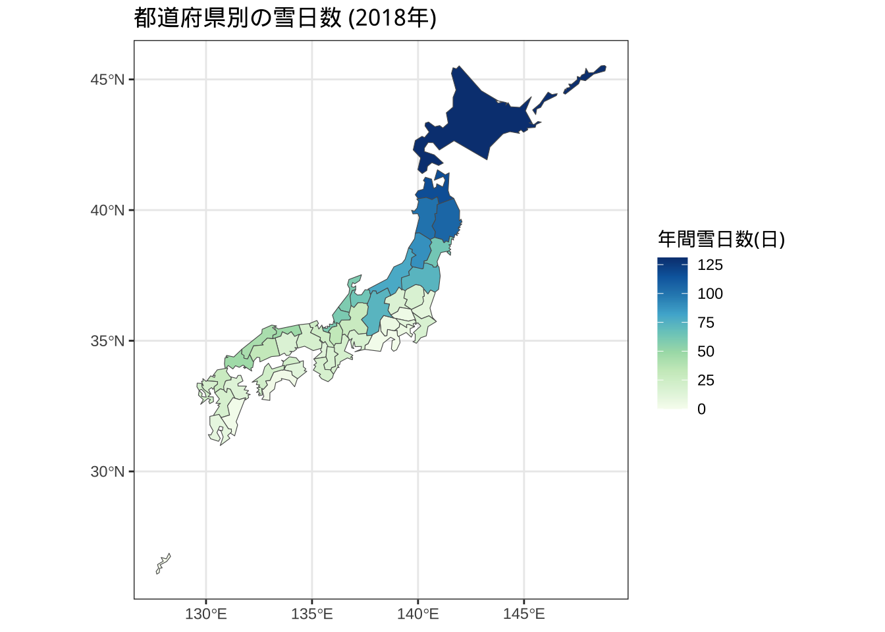
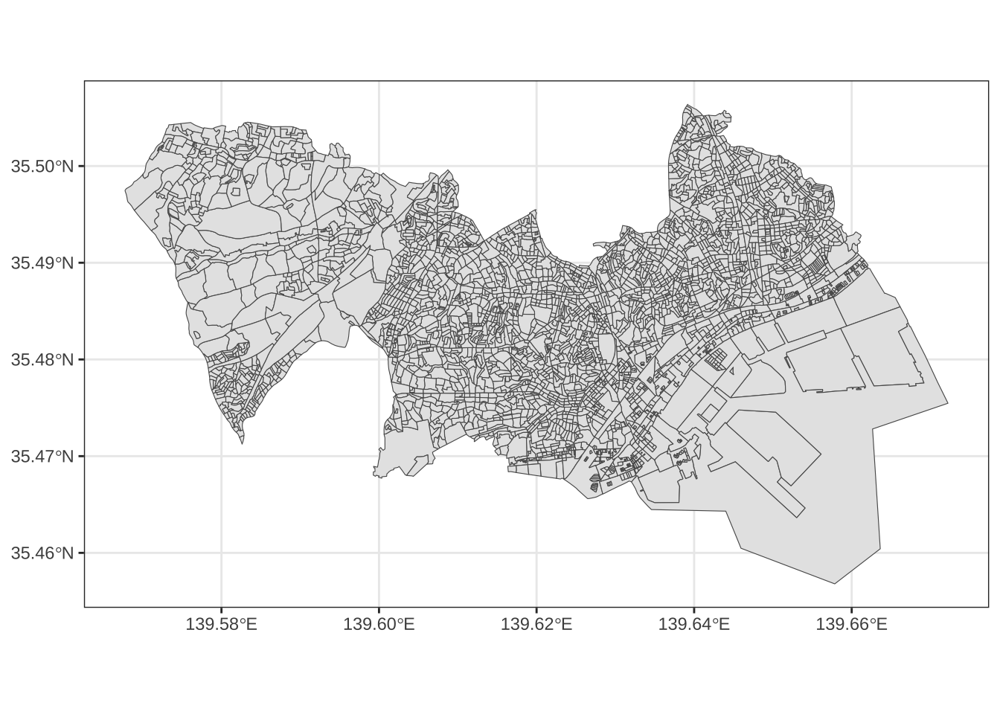
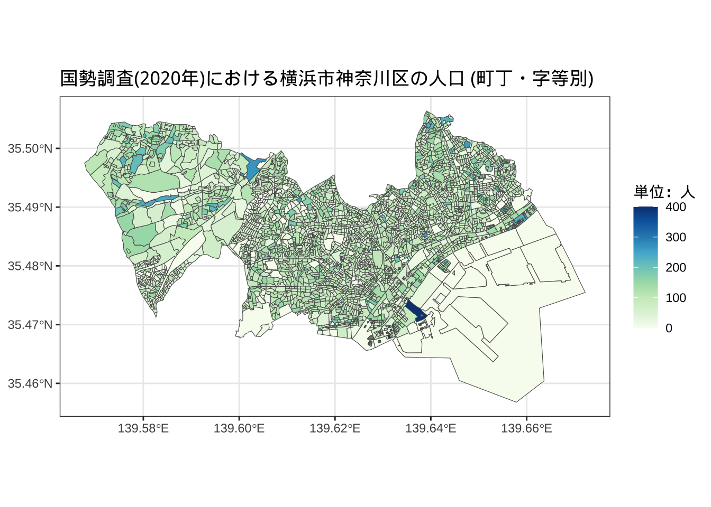
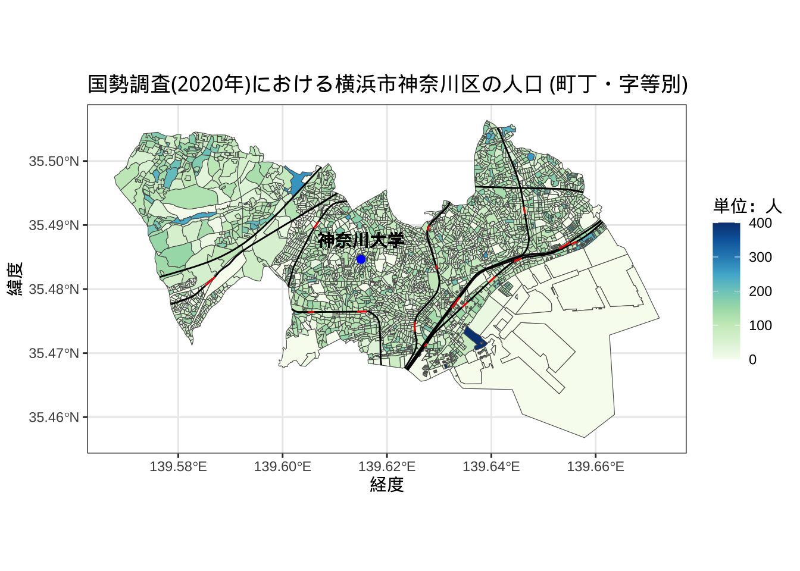
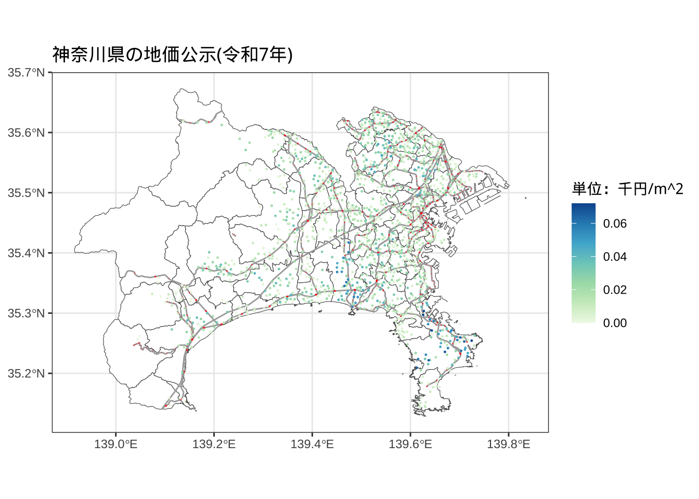
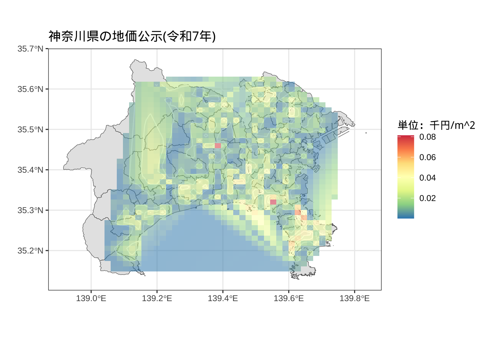
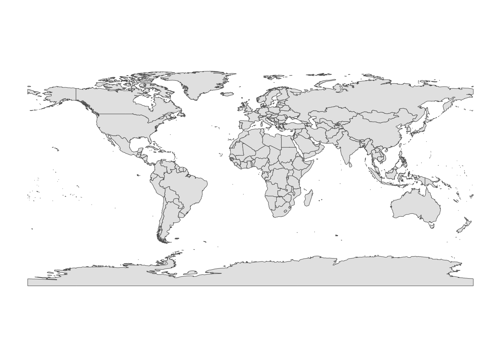
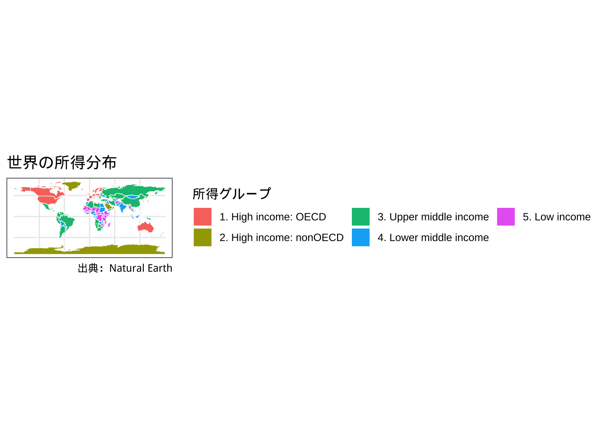
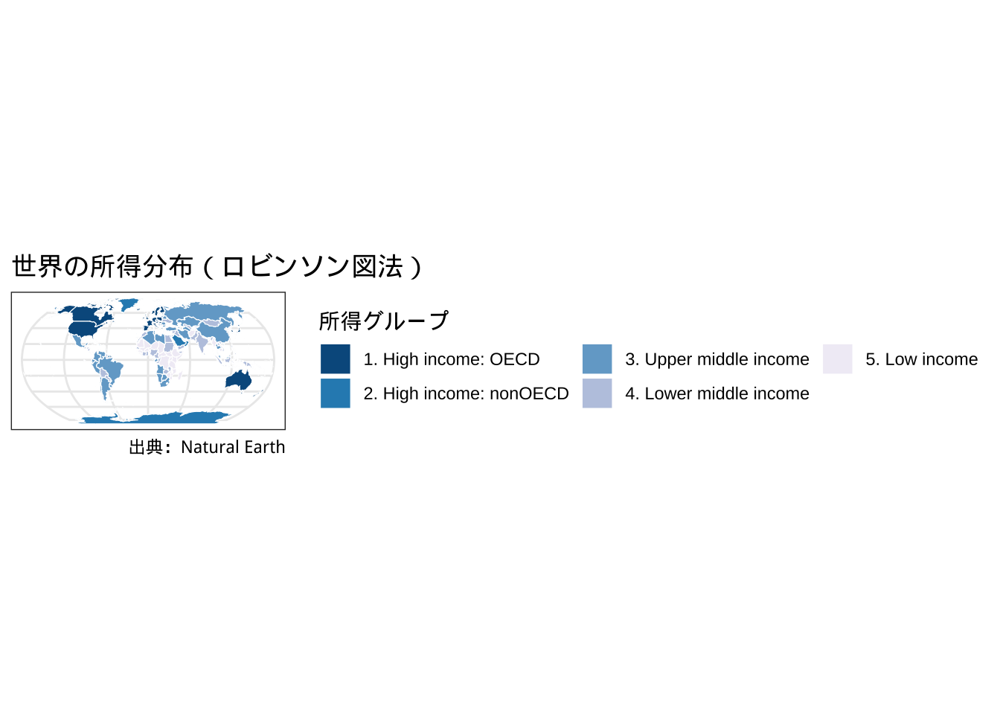
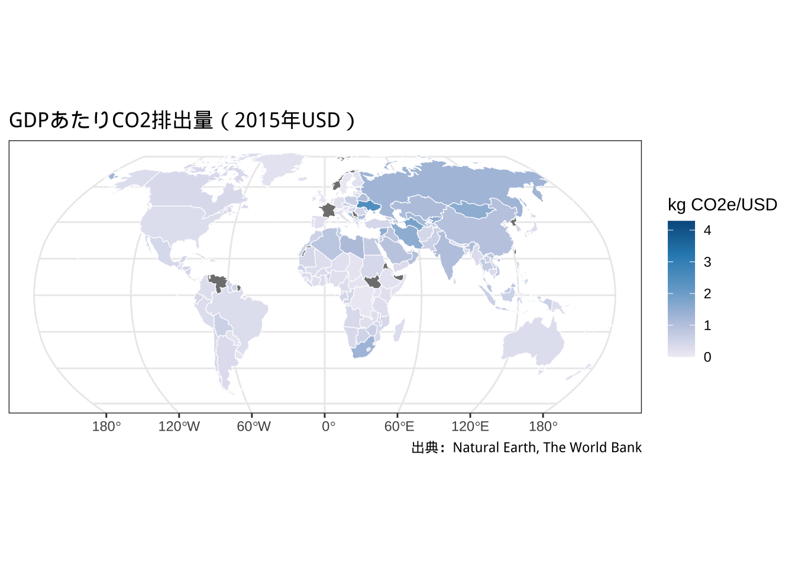

chapter: 5 可視化(2)：ggplot2による地図作成
空間的な広がりのあるデータを扱う際には、地図による可視化がデータの特徴を理解する上で大きな助けになります。グラフ描画に用いたggplot2を拡張することで様々な地図データを描画できることはRの魅力の一つです。
地図を使った描画には、位置情報の正確さをそれほど必要としない場合と地理的情報の精度が極めて情報な場合の２通りが考えられます。前者は、コロプレス図と呼ばれるいわゆる「白地図の塗り分け」のようなものが相当します。後者は、GISと呼ばれる地理情報科学の分野に近いケースで、「迷惑施設が県境付近に立地しやすい」という仮説を検証するなど、正確な地理情報が前提となる場合です。
5.1 パレットの追加 (1)
Rの中で簡単に追加できる色の組み合わせを提供しているpackageにRColorBrewerがあります。慣れてきたらこのカラーパレットを参考にして色を変えてみても良いでしょう。
5.2 パレットの追加 (2)
他にもRではさまざまなパレットがパッケージとして用意されています。たとえば、MetBrewerは、各パレットがニューヨークのメトロポリタン美術館の作品からヒントを得て作成されているものです。
# install.packages("MetBrewer")
library(MetBrewer)
# ゴッホその１（糸杉 Cypresses(1889) )のパレットの出力
met.brewer(name="VanGogh1", n=7, type="discrete") 上記はパレットの１例で、ゴッホの糸杉という作品にヒントを得ているパレットです。その他のパレットの詳細はパッケージの作者のウェブサイトで確認可能です。
上記はパレットの１例で、ゴッホの糸杉という作品にヒントを得ているパレットです。その他のパレットの詳細はパッケージの作者のウェブサイトで確認可能です。
5.3 塗り分け地図の作成
はじめに日本の塗り分け地図をなるべく簡単に作成する方法を学びます。NipponMapというpackageでは見やすさを重視して、海岸線など一部を単純化しています。都道府県別の塗り分けなどは地理情報の精度よりも見やすさを優先すべきです。
なお、left_join関数は、left_join(A,B, by="C")であるとき、Cという列をキーにして、AにBの情報を追加する関数です。
#一回だけ以下のインストールが必要
#install.packages(c("NipponMap", "tidyverse"))
# ライブラリコマンドでの読み込みは毎回必要
library(readxl)
library(NipponMap)
library(sf)
library(tidyverse)
#ウェブサイトから直接ダウンロードする場合
myURL<-"https://yamamoto-masashi.github.io/DSlec/20201028sample.xls"
download.file(myURL,destfile="20201028sample.xls", mode = "wb")
# エクセルファイルの読み込み
# ヘッダ部分を読み飛ばしている
# sheet=1を変更することで別のシートも読める
sampleDB <- read_excel("20201028sample.xls",skip=5,sheet=1)## New names:
## • `` -> `...1`
## • `` -> `...2`# 変数の対応関係
# A1101_総人口【人】
# A1301_15歳未満人口【人】
# A1303_65歳以上人口【人】
# B1101_ 総面積（北方地域及び竹島を除く）【ｈａ】
# B1103_ 可住地面積【ｈａ】
# B4107_ 雪日数（年間）【日】
# B4108_ 日照時間（年間）【時間】
# D110101_市町村数【‐】
# E6102_大学数【校】
# E6302_大学学生数【人】
# F610201_超過実労働時間数（男）【時間】
# F610202_超過実労働時間数（女）【時間】
# H110202_空き家数【戸】
# 列１と列２の名前を変更している。
names(sampleDB)[1:2]<-c("prefcode","prefnameJ")
# データと地図を結合する際にキーの型が同じ必要があるので
# 数値型を文字型に変更している。
sampleDB$prefcode<-as.character(sampleDB$prefcode)
# 地図の情報はNipponMapから取り出しています。
# この方法は以下で教えていただきました。
# https://ill-identified.hatenablog.com/entry/2020/12/07/134705
Nippon_map <- read_sf(system.file("shapes/jpn.shp", package = "NipponMap")[1],
crs = "+proj=longlat +datum=WGS84")
# 地図情報に総務省のデータベースを接続
mapDB<-left_join(Nippon_map,sampleDB, by=c("SP_ID"="prefcode"))
# 地図にプロット
ggplot(mapDB, aes(fill = B4107)) +
geom_sf() +
scale_fill_gradientn(colors=brewer.pal(9,"GnBu"))+
theme_gray (base_family = "HiraKakuPro-W3")+
labs(fill = "年間雪日数(日)")+
ggtitle("都道府県別の雪日数 (2018年)")+
theme_bw()
スペースの都合や見やすさという点で北海道と沖縄県を移動する場合があります。そのような地図もRで作成することができます。なお、この作図は「ジオメトリの移動による日本地図の可視化」を参考にして作成しました。
annotate()関数を使って、始点と終点を与えることで線を引くことができるので、その機能を使って、北海道と沖縄県を区別する線を加えます。
#ジオメトリの直接変更
#北海道の都道府県番号は１、沖縄県は47。
Nippon_map$geometry[1]=Nippon_map$geometry[1]+c(-11, -4)
Nippon_map$geometry[47]=Nippon_map$geometry[47]+c(12, 5)
#日本地図の描写
ggplot()+
geom_sf(data=Nippon_map, aes(fill=population/10000))+
scale_fill_gradientn(colors=brewer.pal(9,"GnBu"))+
annotate("segment", x=129, xend=134.2, y=37, yend=37,
color="gray", size=1)+
annotate("segment", x=134.2, xend=138.5, y=37, yend=41,
color="gray", size=1)+
annotate("segment", x=139.8, xend=141, y=32.2, yend=32.2,
color="gray", size=1)+
annotate("segment", x=138.5, xend=139.8, y=31, yend=32.2,
color="gray", size=1)+
labs(fill="万人", x="", y="",
caption="Nippomap")+
ggtitle("都道府県別人口")+
theme_bw()5.4 よりGISライクな地図の作成
以下では地理情報をできるだけ正確に扱った地図の描画について解説します。例として用いるデータは、2020年国勢調査の横浜市（小地域）です。このファイルは、
総務省統計局 >> 小地域 >> 国勢調査 >> 2020年 小地域 >> 世界測地系緯度経度・Shapefile >> 神奈川県 >> 横浜市神奈川区
でダウンロードできます。ダウンロードしたファイルはzip形式なので解凍が必要です。以下の例では、解凍後にYokohamaKanagawaという名前にフォルダ名を変更しています。
地図情報のうち、ベクターデータは、シェープファイルという形式で利用することがデフォルトになっています。シェープファイルとは、Esri社が開発したGIS用のデータフォーマットで、ポイントデータ(1組以上の緯度、経度情報)、ラインデータ(2組のポイントデータを結んだものの集まり)、ポリゴンデータ(ラインデータを結んだもの)を格納できます。
シェープファイルの拡張子は、.shpですが、シェープファイルはこのファイル単独では動作しません。データをダウンロードするときはついてくる複数のファイル（最低でも３つはある）を全て同じフォルダに保存するようにしてください。
library(sf)
# 横浜市神奈川区のシェープファイルを読み込む
map <- read_sf("YokohamaKanagawa/r2kb14102.shp",
crs = "+proj=longlat +datum=WGS84")
# 表示
ggplot(map) + geom_sf()+
theme_bw()
各町丁・字等別の人口で塗り分けをしてみましょう。
ggplot(map) + geom_sf(aes(fill=JINKO))+
scale_fill_gradientn(colors=brewer.pal(9,"GnBu"))+
theme_bw (base_family = "HiraKakuPro-W3")+
labs(fill = "単位：人")+
ggtitle("国勢調査(2020年)における横浜市神奈川区の人口 (町丁・字等別)")
さらに鉄道路線、大学の立地などを重ねてみましょう。
以下の例では、鉄道のデータを国土数値情報という国土交通省が運営しているウェブサイトからダウンロードして使っています。このサイトの「4.交通」の中にある「鉄道(ライン）」というデータを使用しています。なお年ごとに路線が変化しているため、国勢調査に合わせて2020年のデータを使用しています。
この鉄道データは全国のJR及び私鉄を全て含むので、このままプロットすると全国の全ての鉄道路線が表示されます。そのため平塚市の路線に限定する必要があります。
そこで使用しているが、st_intersectionという関数です。この関数を使うと二つの地理データに共通の部分だけを残すことができます。鉄道(ライン)データは駅の情報も含むため、駅も赤色で表示しています。
最後に神奈川大学の位置をannotate関数を使って神奈川大学の場所を、geom_text関数を使って、神奈川大学の名称を表示しました。これらの関数は緯度、経度を使って表示することができます。
trainline <- read_sf("Train/N02-20_RailroadSection.shp",
crs = "+proj=longlat +datum=WGS84") # 鉄道線路網のシェープファイル
trainstation <- read_sf("Train/N02-20_Station.shp",
crs = "+proj=longlat +datum=WGS84") # 鉄道駅のシェープファイル
# ポリゴンの頂点が重複していると新しいsfではエラーが出るので、
# s2をFALSEにしている
# https://stackoverflow.com/questions/68808238/how-to-fix-spherical-geometry-errors-caused-by-conversion-from-geos-to-s2
sf_use_s2(FALSE)
ggplot(map)+
geom_sf(aes(fill=JINKO))+
geom_sf(data=st_sf(geometry=st_intersection(st_union(map),st_union(trainline))),
color="black",size=1)+
geom_sf(data=st_sf(geometry=st_intersection(st_union(map),st_union(trainstation))),
color="red",size=1)+
annotate("point", x = 139.6150326, y = 35.4846314, colour = "blue", size=2)+
geom_text(aes(x = 139.6150326, y = 35.4876314), label = "神奈川大学",
family = "HiraKakuProN-W3")+
scale_fill_gradientn(colors=brewer.pal(9,"GnBu"))+
theme_bw (base_family = "HiraKakuPro-W3")+
labs(fill = "単位：人")+
xlab("経度")+ylab("緯度")+
ggtitle("国勢調査(2020年)における横浜市神奈川区の人口 (町丁・字等別)") 
続いて、地価公示のデータをプロットしてみよう。地価公示の詳細はこちらをご覧ください。
地価公示とは、地価公示法に基づいて、国土交通省土地鑑定委員会が、適正な地価の 形成に寄与するために、毎年1月1日時点における標準地の正常な価格を3月に公示 (約26,000地点で実施）するもので、社会・経済活動についての制度インフラとなって います。
主な役割
1.一般の土地の取引に対して指標を与えること
2.不動産鑑定の規準となること
3.公共事業用地の取得価格算定の規準となること
4.土地の相続評価および固定資産税評価についての基準となること
5.国土利用計画法による土地の価格審査の規準となること 等
位置情報のついた地価公示のデータは
国土数値情報 >> 1. 国土 >> 地価公示 (ポイント) >> 神奈川県 >> 令和7年
にアクセスすると入手できる。
以下では、地価の動向をみるために、より大きなスケールで可視化を行いたいので、ベースマップを横浜市神奈川区から神奈川県に変更する。
#地価公示(令和7年)
KanagawaPrice<-read_sf("L01-25_14_GML/L01-25_14.shp")
#地価を整数型に
KanagawaPrice$price<-as.integer(KanagawaPrice$L01_006)
# 用途が住宅のもののみに
KanagawaPrice %>%
filter(L01_028=="住宅") -> KanagawaPriceHome
#神奈川県の行政界 (2024年)
KanaSHP<-read_sf("N03-20240101_14_GML/N03-20240101_14.shp",
crs = "+proj=longlat +datum=WGS84") # 神奈川県のシェープファイル
ggplot() +
geom_sf(data=KanaSHP,fill="white")+
geom_sf(data=st_sf(geometry=st_intersection(st_union(KanaSHP),st_union(trainline))),
color="darkgray",size=0.5)+
geom_sf(data=st_sf(geometry=st_intersection(st_union(KanaSHP),st_union(trainstation))),
color="red",size=0.5)+
geom_sf(data=KanagawaPriceHome,aes(color = price/1000),size=0.2)+
scale_color_gradientn(colors=brewer.pal(7,"GnBu"))+
theme_bw(base_family = "HiraKakuPro-W3")+
labs(color = "単位：千円/m^2")+
ggtitle("神奈川県の地価公示(令和7年)")
これをさらにヒートマップの形で表してみよう。
#install.packages("akima")
library(akima)
# sf objectから緯度経度を取り出す
KanaCoords<-st_coordinates(KanagawaPrice$geometry)
# XおよびYとして緯度経度を追加する（もっと美しいやり方あると思いますが）
KanaPrice<-cbind(KanagawaPrice,KanaCoords)
# ポイントデータを補間する
interpdf <-interp2xyz(interp(x=KanaPrice$X, y=KanaPrice$Y, z=KanaPrice$price/1000,
duplicate="mean"), data.frame=TRUE)
interpdf %>%
filter(!is.na(z)) %>%
tbl_df() %>%
ggplot() + geom_sf(data=KanaSHP)+
geom_contour(aes(x = x, y = y, z = z),color = "white", alpha = 1) +
geom_tile(aes(x = x, y = y, z = z, fill = z,alpha=0.5)) +
scale_fill_distiller(palette="Spectral", na.value="white") +
theme_bw(base_family = "HiraKakuPro-W3")+
labs(fill="単位：千円/m^2")+
guides(alpha=FALSE)+xlab("")+ylab("")+
ggtitle("神奈川県の地価公示(令和7年)")->p
print(p)
次に二つの地図を１枚の図としてプロットしてみよう。
使用するデータは一般廃棄物処理の施設立地のデータで以下でダウンロードできる。
国土数値情報 >> 3. 地域 >> 廃棄物処理施設 (ポイント) >> 神奈川県(平成24年)
はじめにそれぞれの地図を作成する。
library(cowplot)
setwd("~/R/bookdown/datalecture2025/")
# 産業廃棄物のデータの読み込み
KanaIndWaste<-read_sf("P15-12_14_GML/P15-12_14_IndustrialWasteDisposalFacilities.shp",
options = c("encoding=CP932"),
crs="WGS84")
# 一般廃棄物のデータの読み込み
KanaMswWaste<-read_sf("P15-12_14_GML/P15-12_14_GeneralWasteDisposalFacilities.shp",
options = c("encoding=CP932"),
crs="WGS84")
#横浜市の選択
KanaSHP |>
filter(N03_004 =="横浜市")-> YokohamaMap
#湘南地域の可視化
ggplot()+
geom_sf(data=KanaSHP, size=0.1)+
geom_sf(data=YokohamaMap,size=0.1,fill="white")+
theme(axis.ticks = element_blank(),
axis.text.x = element_blank(),
axis.text.y = element_blank())->ggm1
ggm1#横浜市の一般廃棄物処理施設の取り出し
KanaMswWaste %>%
filter(P15_002 =="横浜市") -> YokohamaMswMap
#施設の可視化
ggplot()+
geom_sf(data=YokohamaMap,fill="white")+
geom_sf(data=YokohamaMswMap,size=1,color="red")+
theme_bw (base_family = "HiraKakuPro-W3")+
annotate("point", x = 139.6150326, y = 35.4846314, colour = "blue", size=2)+
geom_text(aes(x = 139.6150326, y = 35.4946314), label = "神奈川大学",
family = "HiraKakuProN-W3")+
ggtitle("横浜市の一般廃棄物処理施設")->ggm2
ggm2この地図をみると廃棄物処理施設は、区の境界に近い場所に立地しているようにもみえる。皆さんはどう思うだろうか？
5.5 世界地図の活用
Natural Earthというサイトに世界の地図データが無料でダウンロード可能である。以下では、rnaturalearthというpackageを使って、世界地図を描写する方法を紹介する。
# はじめにこの二つのインストールが必要
#install.packages("rnaturalearth")
# install.packages("rnaturalearthdata")
library(sf)
library(tidyverse)
library(rnaturalearth) #Natural Earth
World_map<-
ne_countries(scale="medium",
returnclass="sf")
ggplot()+
geom_sf(data=World_map)
## Simple feature collection with 6 features and 168 fields
## Geometry type: MULTIPOLYGON
## Dimension: XY
## Bounding box: xmin: -73 ymin: -22 xmax: 110 ymax: 42
## Geodetic CRS: WGS 84
## featurecla scalerank labelrank sovereignt sov_a3 adm0_dif level type tlc
## 1 Admin-0 country 1 3 Zimbabwe ZWE 0 2 Sovereign country 1
## 2 Admin-0 country 1 3 Zambia ZMB 0 2 Sovereign country 1
## 3 Admin-0 country 1 3 Yemen YEM 0 2 Sovereign country 1
## 4 Admin-0 country 3 2 Vietnam VNM 0 2 Sovereign country 1
## 5 Admin-0 country 5 3 Venezuela VEN 0 2 Sovereign country 1
## admin adm0_a3 geou_dif geounit gu_a3 su_dif subunit su_a3 brk_diff name
## 1 Zimbabwe ZWE 0 Zimbabwe ZWE 0 Zimbabwe ZWE 0 Zimbabwe
## 2 Zambia ZMB 0 Zambia ZMB 0 Zambia ZMB 0 Zambia
## 3 Yemen YEM 0 Yemen YEM 0 Yemen YEM 0 Yemen
## 4 Vietnam VNM 0 Vietnam VNM 0 Vietnam VNM 0 Vietnam
## 5 Venezuela VEN 0 Venezuela VEN 0 Venezuela VEN 0 Venezuela
## name_long brk_a3 brk_name brk_group abbrev postal formal_en
## 1 Zimbabwe ZWE Zimbabwe <NA> Zimb. ZW Republic of Zimbabwe
## 2 Zambia ZMB Zambia <NA> Zambia ZM Republic of Zambia
## 3 Yemen YEM Yemen <NA> Yem. YE Republic of Yemen
## 4 Vietnam VNM Vietnam <NA> Viet. VN Socialist Republic of Vietnam
## 5 Venezuela VEN Venezuela <NA> Ven. VE Bolivarian Republic of Venezuela
## formal_fr name_ciawf note_adm0 note_brk name_sort name_alt
## 1 <NA> Zimbabwe <NA> <NA> Zimbabwe <NA>
## 2 <NA> Zambia <NA> <NA> Zambia <NA>
## 3 <NA> Yemen <NA> <NA> Yemen, Rep. <NA>
## 4 <NA> Vietnam <NA> <NA> Vietnam <NA>
## 5 República Bolivariana de Venezuela Venezuela <NA> <NA> Venezuela, RB <NA>
## mapcolor7 mapcolor8 mapcolor9 mapcolor13 pop_est pop_rank pop_year gdp_md gdp_year
## 1 1 5 3 9 1.5e+07 14 2019 21440 2019
## 2 5 8 5 13 1.8e+07 14 2019 23309 2019
## 3 5 3 3 11 2.9e+07 15 2019 22581 2019
## 4 5 6 5 4 9.6e+07 16 2019 261921 2019
## 5 1 3 1 4 2.9e+07 15 2019 482359 2014
## economy income_grp fips_10 iso_a2 iso_a2_eh iso_a3 iso_a3_eh
## 1 5. Emerging region: G20 5. Low income ZI ZW ZW ZWE ZWE
## 2 7. Least developed region 4. Lower middle income ZA ZM ZM ZMB ZMB
## 3 7. Least developed region 4. Lower middle income YM YE YE YEM YEM
## 4 5. Emerging region: G20 4. Lower middle income VM VN VN VNM VNM
## 5 5. Emerging region: G20 3. Upper middle income VE VE VE VEN VEN
## iso_n3 iso_n3_eh un_a3 wb_a2 wb_a3 woe_id woe_id_eh woe_note adm0_iso
## 1 716 716 716 ZW ZWE 23425004 23425004 Exact WOE match as country ZWE
## 2 894 894 894 ZM ZMB 23425003 23425003 Exact WOE match as country ZMB
## 3 887 887 887 RY YEM 23425002 23425002 Exact WOE match as country YEM
## 4 704 704 704 VN VNM 23424984 23424984 Exact WOE match as country VNM
## 5 862 862 862 VE VEN 23424982 23424982 Exact WOE match as country VEN
## adm0_diff adm0_tlc adm0_a3_us adm0_a3_fr adm0_a3_ru adm0_a3_es adm0_a3_cn adm0_a3_tw
## 1 <NA> ZWE ZWE ZWE ZWE ZWE ZWE ZWE
## 2 <NA> ZMB ZMB ZMB ZMB ZMB ZMB ZMB
## 3 <NA> YEM YEM YEM YEM YEM YEM YEM
## 4 <NA> VNM VNM VNM VNM VNM VNM VNM
## 5 <NA> VEN VEN VEN VEN VEN VEN VEN
## adm0_a3_in adm0_a3_np adm0_a3_pk adm0_a3_de adm0_a3_gb adm0_a3_br adm0_a3_il adm0_a3_ps
## 1 ZWE ZWE ZWE ZWE ZWE ZWE ZWE ZWE
## 2 ZMB ZMB ZMB ZMB ZMB ZMB ZMB ZMB
## 3 YEM YEM YEM YEM YEM YEM YEM YEM
## 4 VNM VNM VNM VNM VNM VNM VNM VNM
## 5 VEN VEN VEN VEN VEN VEN VEN VEN
## adm0_a3_sa adm0_a3_eg adm0_a3_ma adm0_a3_pt adm0_a3_ar adm0_a3_jp adm0_a3_ko adm0_a3_vn
## 1 ZWE ZWE ZWE ZWE ZWE ZWE ZWE ZWE
## 2 ZMB ZMB ZMB ZMB ZMB ZMB ZMB ZMB
## 3 YEM YEM YEM YEM YEM YEM YEM YEM
## 4 VNM VNM VNM VNM VNM VNM VNM VNM
## 5 VEN VEN VEN VEN VEN VEN VEN VEN
## adm0_a3_tr adm0_a3_id adm0_a3_pl adm0_a3_gr adm0_a3_it adm0_a3_nl adm0_a3_se adm0_a3_bd
## 1 ZWE ZWE ZWE ZWE ZWE ZWE ZWE ZWE
## 2 ZMB ZMB ZMB ZMB ZMB ZMB ZMB ZMB
## 3 YEM YEM YEM YEM YEM YEM YEM YEM
## 4 VNM VNM VNM VNM VNM VNM VNM VNM
## 5 VEN VEN VEN VEN VEN VEN VEN VEN
## adm0_a3_ua adm0_a3_un adm0_a3_wb continent region_un subregion
## 1 ZWE -99 -99 Africa Africa Eastern Africa
## 2 ZMB -99 -99 Africa Africa Eastern Africa
## 3 YEM -99 -99 Asia Asia Western Asia
## 4 VNM -99 -99 Asia Asia South-Eastern Asia
## 5 VEN -99 -99 South America Americas South America
## region_wb name_len long_len abbrev_len tiny homepart min_zoom min_label
## 1 Sub-Saharan Africa 8 8 5 -99 1 0 2.5
## 2 Sub-Saharan Africa 6 6 6 -99 1 0 3.0
## 3 Middle East & North Africa 5 5 4 -99 1 0 3.0
## 4 East Asia & Pacific 7 7 5 2 1 0 2.0
## 5 Latin America & Caribbean 9 9 4 -99 1 0 2.5
## max_label label_x label_y ne_id wikidataid name_ar name_bn name_de name_en name_es
## 1 8.0 30 -18.9 1.2e+09 Q954 زيمبابوي জিম্বাবুয়ে Simbabwe Zimbabwe Zimbabue
## 2 8.0 26 -14.7 1.2e+09 Q953 زامبيا জাম্বিয়া Sambia Zambia Zambia
## 3 8.0 46 15.3 1.2e+09 Q805 اليمن ইয়েমেন Jemen Yemen Yemen
## 4 7.0 105 21.7 1.2e+09 Q881 فيتنام ভিয়েতনাম Vietnam Vietnam Vietnam
## 5 7.5 -65 7.2 1.2e+09 Q717 فنزويلا ভেনেজুয়েলা Venezuela Venezuela Venezuela
## name_fa name_fr name_el name_he name_hi name_hu name_id name_it name_ja
## 1 زیمبابوه Zimbabwe Ζιμπάμπουε זימבבואה ज़िम्बाब्वे Zimbabwe Zimbabwe Zimbabwe ジンバブエ
## 2 زامبیا Zambie Ζάμπια זמביה ज़ाम्बिया Zambia Zambia Zambia ザンビア
## 3 یمن Yémen Υεμένη תימן यमन Jemen Yaman Yemen イエメン
## 4 ویتنام Viêt Nam Βιετνάμ וייטנאם वियतनाम Vietnám Vietnam Vietnam ベトナム
## 5 ونزوئلا Venezuela Βενεζουέλα ונצואלה वेनेज़ुएला Venezuela Venezuela Venezuela ベネズエラ
## name_ko name_nl name_pl name_pt name_ru name_sv name_tr name_uk name_ur
## 1 짐바브웨 Zimbabwe Zimbabwe Zimbábue Зимбабве Zimbabwe Zimbabve Зімбабве زمبابوے
## 2 잠비아 Zambia Zambia Zâmbia Замбия Zambia Zambiya Замбія زیمبیا
## 3 예멘 Jemen Jemen Iémen Йемен Jemen Yemen Ємен یمن
## 4 베트남 Vietnam Wietnam Vietname Вьетнам Vietnam Vietnam В'єтнам ویتنام
## 5 베네수엘라 Venezuela Wenezuela Venezuela Венесуэла Venezuela Venezuela Венесуела وینیزویلا
## name_vi name_zh name_zht fclass_iso tlc_diff fclass_tlc fclass_us fclass_fr
## 1 Zimbabwe 津巴布韦 辛巴威 Admin-0 country <NA> Admin-0 country <NA> <NA>
## 2 Zambia 赞比亚 尚比亞 Admin-0 country <NA> Admin-0 country <NA> <NA>
## 3 Yemen 也门 葉門 Admin-0 country <NA> Admin-0 country <NA> <NA>
## 4 Việt Nam 越南 越南 Admin-0 country <NA> Admin-0 country <NA> <NA>
## 5 Venezuela 委内瑞拉 委內瑞拉 Admin-0 country <NA> Admin-0 country <NA> <NA>
## fclass_ru fclass_es fclass_cn fclass_tw fclass_in fclass_np fclass_pk fclass_de fclass_gb
## 1 <NA> <NA> <NA> <NA> <NA> <NA> <NA> <NA> <NA>
## 2 <NA> <NA> <NA> <NA> <NA> <NA> <NA> <NA> <NA>
## 3 <NA> <NA> <NA> <NA> <NA> <NA> <NA> <NA> <NA>
## 4 <NA> <NA> <NA> <NA> <NA> <NA> <NA> <NA> <NA>
## 5 <NA> <NA> <NA> <NA> <NA> <NA> <NA> <NA> <NA>
## fclass_br fclass_il fclass_ps fclass_sa fclass_eg fclass_ma fclass_pt fclass_ar fclass_jp
## 1 <NA> <NA> <NA> <NA> <NA> <NA> <NA> <NA> <NA>
## 2 <NA> <NA> <NA> <NA> <NA> <NA> <NA> <NA> <NA>
## 3 <NA> <NA> <NA> <NA> <NA> <NA> <NA> <NA> <NA>
## 4 <NA> <NA> <NA> <NA> <NA> <NA> <NA> <NA> <NA>
## 5 <NA> <NA> <NA> <NA> <NA> <NA> <NA> <NA> <NA>
## fclass_ko fclass_vn fclass_tr fclass_id fclass_pl fclass_gr fclass_it fclass_nl fclass_se
## 1 <NA> <NA> <NA> <NA> <NA> <NA> <NA> <NA> <NA>
## 2 <NA> <NA> <NA> <NA> <NA> <NA> <NA> <NA> <NA>
## 3 <NA> <NA> <NA> <NA> <NA> <NA> <NA> <NA> <NA>
## 4 <NA> <NA> <NA> <NA> <NA> <NA> <NA> <NA> <NA>
## 5 <NA> <NA> <NA> <NA> <NA> <NA> <NA> <NA> <NA>
## fclass_bd fclass_ua geometry
## 1 <NA> <NA> MULTIPOLYGON (((31 -22, 31 ...
## 2 <NA> <NA> MULTIPOLYGON (((30 -16, 30 ...
## 3 <NA> <NA> MULTIPOLYGON (((53 17, 53 1...
## 4 <NA> <NA> MULTIPOLYGON (((104 10, 104...
## 5 <NA> <NA> MULTIPOLYGON (((-61 9.1, -6...
## [ reached 'max' / getOption("max.print") -- omitted 1 rows ]5.5.1 世界地図を利用した可視化
所得階層別の塗り分け
ggplot()+
geom_sf(data=World_map, aes(fill=income_grp),
color="white", size=0.001)+
labs(fill="所得グループ",
caption="出典：Natural Earth")+
ggtitle("世界の所得分布")+
theme_gray(base_family = "HiraKakuPro-W3")+
theme(legend.position="bottom")+
guides(fill=guide_legend(nrow=2))+theme_bw()
世界地図に用いられる投影法の1つであるロビンソン図法（Robinson projection）を用いた可視化。
ggplot()+
geom_sf(data=World_map, aes(fill=income_grp),
color="white", size=0.001)+
scale_fill_brewer(palette = "PuBu",direction=-1)+ # direction=-1でパレットが逆順に
labs(fill="所得グループ",
caption="出典：Natural Earth")+
ggtitle("世界の所得分布（ロビンソン図法）")+
theme_gray(base_family = "HiraKakuPro-W3")+
coord_sf(crs=st_crs("ESRI:54030"))+
theme(legend.position="bottom")+
guides(fill=guide_legend(nrow=2))+theme_bw()
5.5.2 世界銀行データの可視化
世界銀行の公開データは、World Bank Open Dataというサイトでアクセスできる。このサイトを眺めるだけでも多くの情報を得ることができるので、開発問題に興味がある場合はアクセスしてみよう。このサイトの情報は膨大であるため、WDIというpackageを用いてデータにアクセスするのが効率的である。
なお、自分が探しているindicatorのIDを探す場合は、このサイトを参照のこと。
#install.packages("WDI")
library(WDI)
#使用する指標
CO2perGDP<-
WDI(indicator="EN.GHG.CO2.RT.GDP.KD", extra=TRUE,
start=2015, end=2015)
#列名の変更
CO2perGDP %>%
rename(CO2pg=EN.GHG.CO2.RT.GDP.KD) ->
CO2perGDP
#地図データと世界銀行データの結合
CO2pGDP_map<-
left_join(World_map, CO2perGDP, by=c("iso_a3"="iso3c"))
#南極大陸削除(好み)
CO2pGDP_map %>%
filter(iso_a3!="ATA") ->
CO2pGDP_map
#地図の描写
ggplot()+
geom_sf(data=CO2pGDP_map, aes(fill=CO2pg),
color="white", size=0.001)+
scale_fill_gradientn(colors=brewer.pal(5,"PuBu"))+
labs(fill="kg CO2e/USD",
caption="出典：Natural Earth, The World Bank")+
ggtitle("GDPあたりCO2排出量（2015年USD）")+
coord_sf(crs=st_crs("ESRI:54030"))+
theme_bw(base_family = "HiraKakuPro-W3")+
theme(legend.position="bottom")+theme_bw()
5.6 さらに学びたい人へ
このチャプターの内容の多くは、Rによる地理空間データの可視化を参照しています。このサイトではこの他にもたくさんの美しい地図の作成方法が解説されていますので、地図を用いた分析を行いたい場合は必ず確認しましょう。
また、ここに特定の市町村を選んで、さらに分析を加えた例を掲載しています。地域の分析に興味のある人は試してみてください。